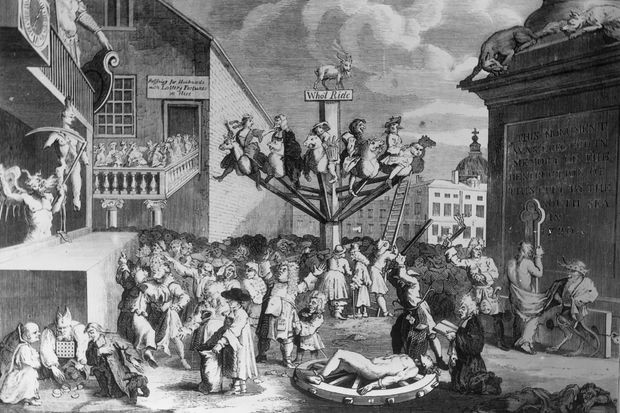
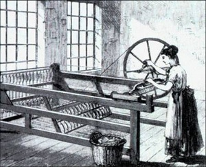
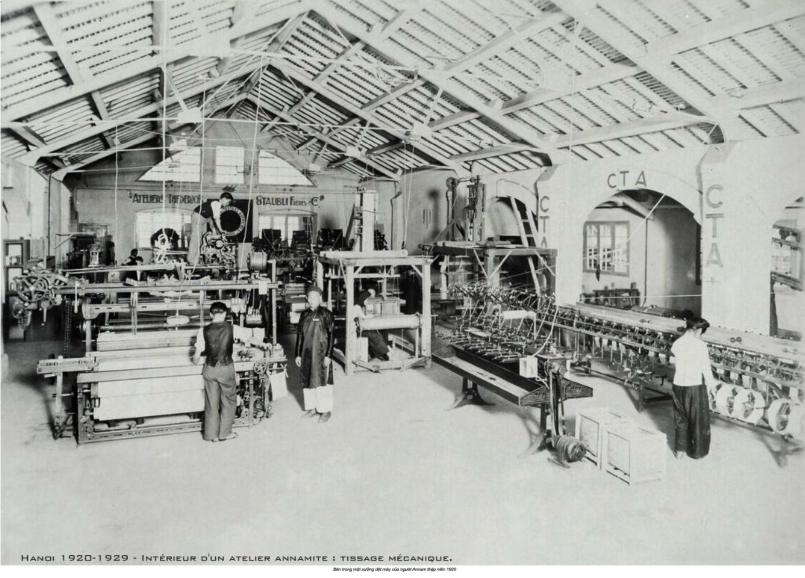
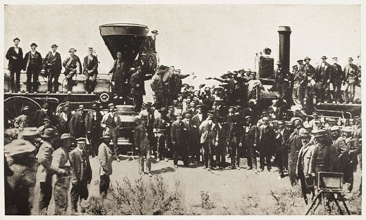
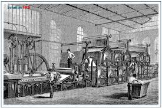
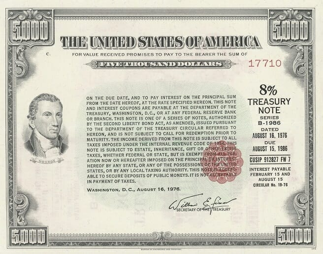
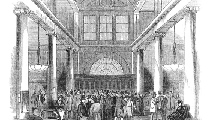
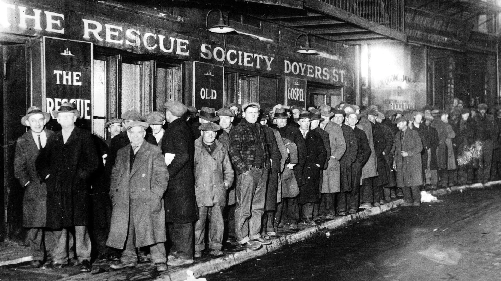
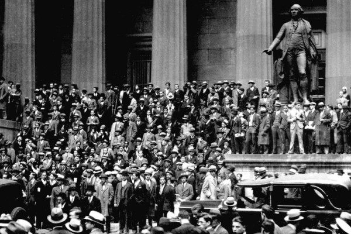
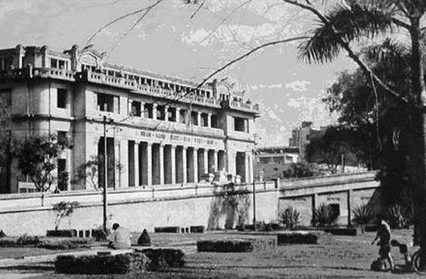

Cách mạng Công nghiệp: Bước ngoặt trong Lịch sử Nhân loại
Cách mạng Công nghiệp là quá trình chuyển đổi sâu sắc từ nền kinh tế nông nghiệp, thủ công sang nền
kinh tế công nghiệp dựa trên máy móc và sản xuất hàng loạt. Quá trình này diễn ra chủ yếu từ giữa
thế kỷ 18 đến thế kỷ 19, khởi đầu tại Anh trước khi lan rộng sang châu Âu, Bắc Mỹ và toàn thế giới.
"Cách mạng Công nghiệp không chỉ thay đổi phương thức sản xuất mà còn tái cấu trúc toàn bộ nền
tảng xã hội, kinh tế và tài chính của nhân loại."
Tại sao Cách mạng Công nghiệp lại quan trọng với Tài chính?
Sự phát triển công nghiệp đòi hỏi một lượng vốn khổng lồ để xây dựng nhà máy, mua máy móc và phát
triển hạ tầng. Điều này thúc đẩy sự ra đời của các định chế tài chính mới và hoàn thiện hệ thống tài
chính hiện đại:
-
Nhu cầu vốn lớn: Các dự án công nghiệp đòi hỏi đầu tư ban đầu lớn hơn nhiều so
với hoạt động nông nghiệp truyền thống.
-
Rủi ro cao: Đầu tư công nghiệp mang tính rủi ro cao, đòi hỏi cơ chế chia sẻ rủi
ro thông qua cổ phần và bảo hiểm.
-
Quy mô thời gian dài: Các dự án như đường sắt cần thời gian hoàn vốn dài, đòi
hỏi nguồn vốn dài hạn.
-
Toàn cầu hóa: Mở rộng thương mại quốc tế đòi hỏi hệ thống thanh toán và tín
dụng xuyên biên giới.
Trang web này sẽ khám phá chi tiết mối quan hệ biện chứng giữa tiến bộ công nghiệp và sự phát triển
của hệ thống tài chính, từ những ngân hàng đầu tiên đến sự hình thành của thị trường vốn hiện đại.
Hành trình Lịch sử: Từ Cách mạng Công nghiệp đến Tài chính Hiện đại
Cuộc Cách mạng Công nghiệp không diễn ra một cách đột ngột mà là kết quả của một quá trình tích lũy
các phát minh, cải tiến kỹ thuật và thay đổi thể chế kéo dài hàng thế kỷ. Dưới đây là những mốc quan
trọng định hình mối quan hệ giữa công nghiệp và tài chính:
1668: Ngân hàng Trung ương đầu tiên
Sveriges Riksbank của Thụy Điển trở thành ngân hàng trung ương đầu tiên ở châu Âu,
đặt nền móng cho hệ thống ngân hàng hiện đại và chính sách tiền tệ có tổ chức.
1694: Thành lập Ngân hàng Anh
Bank of England được thành lập để tài trợ cho chiến tranh chống Pháp, trở thành khuôn
mẫu cho các ngân hàng trung ương sau này và thúc đẩy "Cuộc Cách mạng Tài chính" ở
Anh.

1711-1720: Bong bóng South Sea
Công ty South Sea được thành lập và gây ra một trong những bong bóng đầu cơ đầu tiên
trong lịch sử, cho thấy cả tiềm năng và rủi ro của thị trường vốn hiện đại.

1760: Máy kéo sợi Jenny
James Hargreaves phát minh máy kéo sợi Jenny, tăng năng suất dệt may lên gấp 8 lần,
khởi đầu cho sản xuất công nghiệp quy mô lớn và nhu cầu vốn cho nhà máy.

1771: Nhà máy hiện đại đầu tiên
Richard Arkwright xây dựng nhà máy dệt đầu tiên tại Cromford, sử dụng năng lượng
nước, tạo ra mô hình sản xuất tập trung cần vốn lớn và lao động có tổ chức.
1825: Đường sắt công cộng đầu tiên
Đường sắt Stockton và Darlington khai trương, đánh dấu kỷ nguyên đường sắt - một
trong những ngành cần vốn lớn nhất, thúc đẩy sự phát triển của thị trường vốn và cổ
phiếu.
1830-1870: Bùng nổ đường sắt và tài chính
Giai đoạn "Railway Mania" với sự bùng nổ đầu tư vào đường sắt, thúc đẩy sự phát triển
của Sở giao dịch chứng khoán London và hệ thống ngân hàng hiện đại để đáp ứng nhu
cầu vốn khổng lồ.
Sự Phát triển của Hệ thống Tài chính trong Cách mạng Công nghiệp
3.1 Trước Cách mạng Công nghiệp: Nền tảng Tài chính Sơ khai
Trước thế kỷ 18, hệ thống tài chính còn khá đơn giản và phi tập trung. Hoạt động tài chính
chủ yếu dựa vào:
-
Tiền kim loại: Vàng và bạc là phương tiện thanh toán chính, với giá trị
nội tại.
-
Ngân hàng tư nhân: Các gia đình ngân hàng như Medici, Fugger thống trị
tài chính châu Âu.
- Hối phiếu: Công cụ tín dụng chủ yếu cho thương mại quốc tế.
-
Cho vay nặng lãi: Hoạt động cho vay bị hạn chế bởi luật cấm cho vay
nặng lãi trong nhiều xã hội.
Tại Anh, "Cuộc Cách mạng Tài chính" (1688-1720) đã thiết lập những nền tảng quan trọng:
- Thành lập Bank of England (1694) với độc quyền phát hành tiền giấy.
- Hình thành thị trường trái phiếu chính phủ có tính thanh khoản cao.
- Phát triển các công ty cổ phần và thị trường chứng khoán sơ khai.
- Tạo lập hệ thống thuế quốc gia và nợ công có tổ chức.
"Cuộc Cách mạng Tài chính ở Anh đã tạo ra khung thể chế cần thiết cho sự bùng nổ đầu tư trong
Cách mạng Công nghiệp." - Niall Ferguson, "The Ascent of Money"
3.2 Khi Công nghiệp Phát triển: Hệ thống Tài chính Mở rộng (Thế kỷ 18-19)
Sự bùng nổ của sản xuất công nghiệp tạo ra nhu cầu vốn chưa từng có, thúc đẩy sự phát triển
nhanh chóng của hệ thống tài chính:
Ngân hàng Địa phương và Ngân hàng Cổ phần
Số lượng ngân hàng địa phương (country banks) ở Anh tăng vọt từ 12 ngân hàng năm 1750 lên hơn
600 ngân hàng vào năm 1810. Các ngân hàng này:
- Cung cấp tín dụng ngắn hạn cho thương nhân và nhà sản xuất.
- Phát hành tiền giấy địa phương, bổ sung cho nguồn cung tiền quốc gia.
- Kết nối khu vực nông thôn với trung tâm tài chính London.
Bùng nổ Thị trường Vốn
Các công ty cổ phần (joint-stock companies) trở thành hình thức tổ chức kinh doanh phổ biến,
đặc biệt trong các ngành:
-
Đường sắt: Cần vốn khổng lồ cho hạ tầng, thúc đẩy phát hành cổ phiếu và
trái phiếu quy mô lớn.
-
Khai mỏ: Đòi hỏi đầu tư ban đầu lớn với rủi ro cao, cần cơ chế chia sẻ
rủi ro.
-
Sản xuất: Nhà máy lớn với máy móc đắt tiền vượt quá khả năng tài chính
của cá nhân.
"Railway Mania" - Hiện tượng Đầu cơ Đường sắt
Giai đoạn 1840s chứng kiến cơn sốt đầu tư vào đường sắt ở Anh:
- Hàng trăm công ty đường sắt được thành lập, huy động hàng trăm triệu bảng.
- Thị trường chứng khoán London phát triển mạnh để giao dịch cổ phiếu đường sắt.
-
Tạo ra cơ sở hạ tầng tài chính hiện đại: môi giới chứng khoán, nhà đầu tư tổ chức, báo
cáo tài chính.

3.3 Tác động của Công nghiệp đến Hệ thống Tài chính
Cách mạng Công nghiệp không chỉ được tài trợ bởi hệ thống tài chính mà còn định hình lại hệ
thống này theo những cách sâu sắc:
Chuyên môn hóa Dịch vụ Tài chính
Sự phức tạp ngày càng tăng của nền kinh tế công nghiệp dẫn đến sự chuyên môn hóa trong lĩnh
vực tài chính:
-
Ngân hàng thương mại: Chuyên cho vay ngắn hạn cho hoạt động sản xuất và
thương mại.
-
Ngân hàng đầu tư: Tập trung vào huy động vốn dài hạn thông qua phát
hành chứng khoán.
-
Công ty bảo hiểm: Phát triển để quản lý rủi ro trong sản xuất và vận
tải công nghiệp.
-
Công ty tài chính: Cung cấp tín dụng tiêu dùng và tài trợ mua hàng hóa
lâu bền.
Hình thành Tầng lớp Trung lưu và Văn hóa Đầu tư
Công nghiệp hóa tạo ra tầng lớp trung lưu mới với thu nhập khả dụng và khả năng tiết kiệm:
- Tiết kiệm cá nhân trở thành nguồn vốn quan trọng cho đầu tư công nghiệp.
-
Phát triển các sản phẩm tài chính cho nhà đầu tư nhỏ lẻ: sổ tiết kiệm, trái phiếu, cổ
phiếu.
- Hình thành văn hóa đầu tư và quản lý tài sản trong dân chúng.
Toàn cầu hóa Tài chính
Công nghiệp hóa thúc đẩy thương mại toàn cầu, dẫn đến sự hội nhập của các thị trường tài
chính:
- Hình thành hệ thống thanh toán quốc tế dựa trên bản vị vàng.
-
Đầu tư xuyên biên giới: Vốn từ châu Âu đổ vào các dự án công nghiệp ở Mỹ và thuộc địa.
- Phát triển thị trường hối đoái và các công cụ phòng ngừa rủi ro tỷ giá.
Mối Liên Hệ Công Nghiệp – Tài Chính và Sự Ra Đời Của Đồng Tiền Tín Dụng

4.1 Vì sao Công nghiệp Cần Tài chính?
Cách mạng Công nghiệp tạo ra nhu cầu vốn chưa từng có trong lịch sử nhân loại. Sự chuyển đổi
từ sản xuất thủ công nhỏ lẻ sang sản xuất công nghiệp quy mô lớn đòi hỏi những khoản đầu tư
khổng lồ:
-
Đầu tư cố định lớn: Xây dựng nhà máy, mua máy móc hạng nặng như máy hơi
nước, máy dệt cơ khí đòi hỏi vốn ban đầu rất lớn, vượt xa khả năng tài chính của cá nhân
hay gia đình.
-
Chi phí vận hành cao: Duy trì hoạt động của nhà máy cần nguồn vốn lưu
động thường xuyên cho nguyên vật liệu, tiền lương công nhân, và bảo trì thiết bị.
-
Quy mô thời gian dài: Các dự án hạ tầng như đường sắt, kênh đào cần
thời gian xây dựng kéo dài và chỉ thu hồi vốn sau nhiều năm hoạt động.
-
Rủi ro công nghệ: Đổi mới công nghệ nhanh chóng làm cho máy móc nhanh
chóng lỗi thời, đòi hỏi đầu tư liên tục và chấp nhận rủi ro cao.
4.2 Sự Ra Đời Của Đồng Tiền Tín Dụng
Để đáp ứng nhu cầu vốn ngày càng tăng, hệ thống tài chính đã phát triển các hình thức tiền
tệ mới:
-
Tiền giấy ngân hàng: Các ngân hàng phát hành tiền giấy có thể chuyển
đổi thành vàng, mở rộng cung tiền vượt xa lượng vàng dự trữ.
-
Tín dụng thương mại: Hối phiếu và kỳ phiếu trở thành công cụ thanh toán
phổ biến trong giao dịch thương mại.
-
Tài khoản vãng lai: Cho phép doanh nghiệp thực hiện thanh toán mà không
cần sử dụng tiền mặt.
-
Chứng chỉ tiền gửi: Tạo ra công cụ đầu tư ngắn hạn cho các khoản tiền
nhàn rỗi.
"Tiền tín dụng không chỉ là phương tiện thanh toán mà còn là công cụ huy động vốn, cho phép
chuyển đổi tài sản thành vốn đầu tư cho công nghiệp." - Joseph Schumpeter

4.3 Trái phiếu Quốc gia và Tài trợ Chính phủ
Sự phát triển của trái phiếu quốc gia đóng vai trò then chốt trong việc tạo ra thị trường
vốn hiện đại:
Consols - Trái phiếu Vĩnh viễn của Anh
Năm 1752, chính phủ Anh giới thiệu "Consolidated Annuity" (Consols) - trái phiếu không có
thời hạn với lãi suất cố định. Điều này:
- Tạo ra công cụ đầu tư an toàn, có tính thanh khoản cao
- Thiết lập lãi suất tham chiếu cho toàn bộ hệ thống tài chính
- Cho phép chính phủ huy động vốn dài hạn cho chiến tranh và hạ tầng
- Tạo nền tảng cho sự phát triển của thị trường thứ cấp
Tài trợ cho Chiến tranh và Hạ tầng
Các cuộc chiến tranh của Napoleon (1803-1815) thúc đẩy phát hành trái phiếu chính phủ quy mô
lớn, tạo ra:
- Thị trường trái phiếu quốc tế đầu tiên
- Mạng lưới ngân hàng quốc tế chuyên về tài trợ chính phủ
- Kinh nghiệm trong quản lý nợ công quy mô lớn
- Cơ sở nhà đầu tư rộng khắp, từ quý tộc đến thương nhân
4.4 Ngân hàng Quốc tế và Tài trợ Đa quốc gia
Sự phát triển của ngân hàng quốc tế đóng vai trò quan trọng trong việc kết nối thị trường
vốn toàn cầu:
Gia tộc Rothschild và Mạng lưới Toàn cầu
Gia tộc Rothschild thiết lập mạng lưới ngân hàng tại London, Paris, Frankfurt, Vienna và
Naples, tạo ra:
- Hệ thống chuyển tiền và thanh toán quốc tế hiệu quả
- Khả năng huy động vốn quy mô lớn cho các dự án xuyên quốc gia
- Thị trường trái phiếu chính phủ quốc tế đầu tiên
- Mô hình ngân hàng đầu tư hiện đại
Tài trợ cho Công nghiệp hóa Toàn cầu
Vốn từ châu Âu đổ vào các dự án công nghiệp trên toàn thế giới:
- Đường sắt ở Mỹ, Ấn Độ và Nam Mỹ
- Khai mỏ tại châu Phi và châu Á
- Xây dựng cơ sở hạ tầng đô thị trên toàn cầu
- Phát triển ngành công nghiệp tại các thuộc địa
Rủi Ro & Bài Học Lịch Sử: Ảnh Hưởng Của Cách Mạng Công Nghiệp Đến Tài Chính

5.1 Khủng hoảng Tài chính trong Thời kỳ Công nghiệp hóa
Sự phát triển nhanh chóng của hệ thống tài chính đi kèm với những cú sốc và khủng hoảng định
kỳ:
Khủng hoảng 1825: Bài học Đầu tiên về Bong bóng Đầu cơ
Khủng hoảng 1825 tại Anh là cuộc khủng hoảng tài chính đầu tiên của chủ nghĩa tư bản hiện
đại:
- Bong bóng đầu cơ vào cổ phiếu công ty mỏ Nam Mỹ
- Hàng loạt ngân hàng địa phương phá sản khi bong bóng vỡ
- Bank of England đóng vai trò người cho vay cuối cùng
- Dẫn đến thay đổi pháp lý cho phép thành lập ngân hàng cổ phần
Khủng hoảng 1847: Railway Mania và Hậu quả
Cơn sốt đầu tư vào đường sắt (Railway Mania) đạt đỉnh năm 1846-1847:
- Hàng trăm công ty đường sắt được thành lập với vốn hóa khổng lồ
- Đầu cơ đẩy giá cổ phiếu lên cao không bền vững
- Khi bong bóng vỡ, nhiều công ty phá sản, nhà đầu tư mất trắng
- Buộc chính phủ can thiệp và thiết lập quy định mới
"Lịch sử tài chính là lịch sử của những cơn sốt và sự sụp đổ - mỗi cuộc khủng hoảng dạy cho chúng
ta bài học mới về quản lý rủi ro." - Charles Kindleberger

5.2 Sự Đổ vỡ của Overend Gurney và Khủng hoảng 1866
Công ty tài chính Overend Gurney - "ngân hàng của các ngân hàng" - phá sản năm 1866, gây ra
cuộc khủng hoảng tài chính nghiêm trọng nhất thế kỷ 19 tại Anh:
Nguyên nhân và Diễn biến
- Cho vay rủi ro quá mức vào các dự án đầu cơ
- Mất khả năng thanh khoản khi thị trường co lại
- Kéo theo hàng loạt ngân hàng và công ty tài chính phá sản
- Bank of England từ chối cứu trợ ban đầu, làm trầm trọng thêm khủng hoảng
Bài học và Cải cách
- Xác nhận vai trò của ngân hàng trung ương như người cho vay cuối cùng
- Dẫn đến các quy định về tỷ lệ dự trữ và quản lý rủi ro
- Thúc đẩy sự phát triển của thị trường tiền tệ có tổ chức
- Tăng cường giám sát đối với các tổ chức tài chính phi ngân hàng

5.3 Khủng hoảng Toàn cầu 1873 và Đại Suy thoái
Khủng hoảng 1873 bắt đầu ở Vienna và nhanh chóng lan rộng toàn cầu, đánh dấu sự khởi đầu của
Đại Suy thoái (1873-1879):
Tính chất Toàn cầu của Khủng hoảng
- Bắt đầu với sự sụp đổ của thị trường chứng khoán Vienna
- Lan sang Đức, Pháp, Anh và Hoa Kỳ
- Ảnh hưởng đến các nền kinh tế công nghiệp và thuộc địa
- Cho thấy mức độ liên kết ngày càng tăng của hệ thống tài chính toàn cầu
Nguyên nhân Cơ bản
- Đầu tư quá mức vào đường sắt và công nghiệp nặng
- Bong bóng tài sản và đầu cơ bất động sản
- Sự sụp đổ của ngân hàng Jay Cooke & Company tại Mỹ
- Áp lực giảm phát do sản xuất công nghiệp vượt quá nhu cầu
5.4 Phản ứng Chính sách và Học thuyết Tài chính
Các cuộc khủng hoảng liên tiếp dẫn đến sự phát triển của các học thuyết và chính sách tài
chính mới:
Vai trò Ngân hàng Trung ương
- Bank of England phát triển vai trò người cho vay cuối cùng
- Thiết lập các cơ chế cứu trợ tài chính có hệ thống
- Phát triển chính sách lãi suất để quản lý thanh khoản
- Tạo ra các công cụ thị trường mở để can thiệp vào thị trường tiền tệ
Học thuyết Hóa tệ và Quy tắc Ngân hàng
- Phát triển lý thuyết về tỷ lệ dự trữ vàng tối ưu
- Thiết lập các quy tắc về phát hành tiền giấy
- Phát triển nguyên tắc "cửa sổ chiết khấu" của ngân hàng trung ương
- Tạo cơ sở cho hệ thống ngân hàng trung ương hiện đại
Kết Luận & Ý Nghĩa: Tác Động Xã Hội và Kinh Tế Của Cách Mạng Công Nghiệp

6.1 Di sản của Mối Quan hệ Công nghiệp - Tài chính
Cách mạng Công nghiệp và sự phát triển của hệ thống tài chính hiện đại có mối quan hệ biện
chứng sâu sắc, để lại di sản quan trọng cho nền kinh tế toàn cầu:
6.2 Tác Động Kinh tế Vĩ mô
Sự kết hợp giữa công nghiệp hóa và phát triển tài chính tạo ra bước nhảy vọt trong hiệu suất
kinh tế:
Tăng trưởng và Năng suất
- Tốc độ tăng trưởng kinh tế tăng từ 0.5% lên 2-3% hàng năm
- Năng suất lao động tăng gấp 5-6 lần trong các ngành công nghiệp chủ chốt
- Hình thành nền kinh tế quy mô lớn với chi phí sản xuất giảm mạnh
- Tạo ra khả năng tích lũy vốn và tái đầu tư liên tục
Cơ cấu Kinh tế Chuyển dịch
- Tỷ trọng nông nghiệp giảm từ 70-80% xuống dưới 30% tại các nước công nghiệp
- Công nghiệp và dịch vụ trở thành động lực tăng trưởng chính
- Hình thành các trung tâm công nghiệp và đô thị hóa nhanh chóng
- Phát triển thị trường lao động tự do và hệ thống tiền lương
"Cách mạng Công nghiệp không chỉ thay đổi cách chúng ta sản xuất mà còn thay đổi cách chúng ta
sống, làm việc, và suy nghĩ về thế giới." - Arnold Toynbee
6.3 Biến đổi Xã hội và Đô thị hóa
Công nghiệp hóa tạo ra những thay đổi sâu sắc trong cấu trúc xã hội và không gian địa lý:
Đô thị hóa và Di cư
- Tỷ lệ dân số đô thị tại Anh tăng từ 20% lên 50% trong thế kỷ 19
- Hình thành các thành phố công nghiệp lớn như Manchester, Birmingham
- Di cư ồ ạt từ nông thôn ra thành thị tìm việc làm
- Tạo ra các khu ổ chuột và vấn đề nhà ở đô thị
Phân tầng Xã hội Mới
- Hình thành giai cấp tư sản công nghiệp và tài chính mới
- Phát triển giai cấp công nhân công nghiệp với ý thức giai cấp
- Tầng lớp trung lưu mới xuất hiện với thu nhập và học vấn cao hơn
- Thay đổi quan hệ gia đình và cấu trúc hộ gia đình
6.4 Thách thức Xã hội và Phong trào Cải cách
Công nghiệp hóa cũng tạo ra những vấn đề xã hội nghiêm trọng, dẫn đến các phong trào cải
cách:
Điều kiện Lao động và Đời sống
- Ngày làm việc kéo dài 14-16 giờ trong điều kiện nguy hiểm
- Lao động trẻ em phổ biến với mức lương thấp và điều kiện tồi tệ
- Ô nhiễm môi trường nghiêm trọng tại các khu công nghiệp
- Dịch bệnh và tỷ lệ tử vong cao trong khu ổ chuột đô thị
Phong trào Công nhân và Cải cách Xã hội
- Hình thành các công đoàn và phong trào đấu tranh của công nhân
- Ban hành luật lao động đầu tiên hạn chế lao động trẻ em (1833)
- Cải cách luật bầu cử mở rộng quyền tham chính
- Phát triển các học thuyết xã hội từ bảo thủ đến xã hội chủ nghĩa
6.5 Ý nghĩa Lịch sử và Bài học Hiện đại
Di sản của Cách mạng Công nghiệp và sự phát triển tài chính vẫn còn nguyên giá trị trong
thời đại ngày nay:
Bài học về Phát triển Bền vững
- Cân bằng giữa tăng trưởng kinh tế và công bằng xã hội
- Quản lý rủi ro tài chính trong bối cảnh đổi mới công nghệ
- Phát triển thể chế tài chính hỗ trợ đổi mới sáng tạo
- Điều tiết thị trường để ngăn ngừa khủng hoảng và bong bóng
Mô hình cho Các nước Đang phát triển
- Tầm quan trọng của thể chế tài chính trong công nghiệp hóa
- Vai trò của nhà nước trong xây dựng hạ tầng và giáo dục
- Cần có chiến lược công nghiệp hóa phù hợp với bối cảnh quốc gia
- Quản lý quá trình đô thị hóa và chuyển dịch cơ cấu lao động
Kết luận
Cách mạng Công nghiệp và sự phát triển của hệ thống tài chính hiện đại là hai quá trình gắn
bó chặt chẽ, cùng thúc đẩy sự chuyển đổi sâu sắc của nền kinh tế toàn cầu. Tài chính không
chỉ là công cụ hỗ trợ công nghiệp hóa mà còn là động lực thúc đẩy đổi mới, mở rộng quy mô và
quốc tế hóa sản xuất.
Bài học từ lịch sử này vẫn còn nguyên giá trị trong kỷ nguyên cách mạng công nghiệp 4.0, khi
các công nghệ mới như AI, blockchain và fintech đang tái định hình mối quan hệ giữa sản xuất
và tài chính. Hiểu rõ quá khứ giúp chúng ta định hướng tương lai, xây dựng hệ thống tài
chính-công nghiệp bền vững, công bằng và thịnh vượng cho tất cả mọi người.